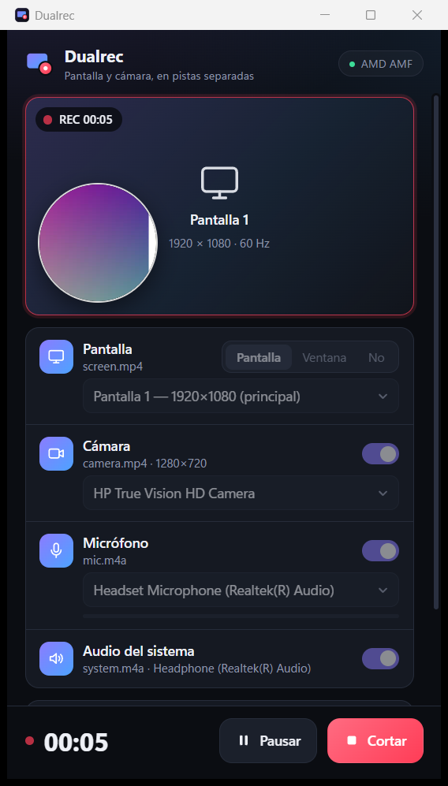

Grabá tu pantalla y tu cámara por separado.
Dualrec graba pantalla, cámara, micrófono y audio del sistema en cuatro archivos sincronizados. Editás cada uno como quieras, sin la cámara pegada encima del video.
Instalador de 30 MB · sin cuenta ni registro · las grabaciones quedan en tu computadora

Miralo en 19 segundos
Un click, cuatro archivos, y la cámara libre para moverla cuando editás.
Una grabación, cuatro archivos
Cada fuente se guarda en su propio archivo, en una carpeta por grabación. Todos arrancan en el mismo instante y duran lo mismo: en el editor los ponés al inicio de la línea de tiempo y ya están alineados.
screen.mp4
Una pantalla entera o una sola ventana, hasta 60 cuadros por segundo.
camera.mp4
Tu cámara a resolución completa, para ubicarla y recortarla donde quieras.
mic.m4a
Tu voz sola, para limpiarla o subirle el volumen sin tocar el resto.
system.m4a
Lo que suena en la computadora, separado del micrófono.
Para qué sirve
Tutoriales y cursos
Mostrás la pantalla completa cuando explicás un paso y tu cara cuando hablás. Lo decidís al editar, no al grabar.
Demos de producto
Grabás una vez y armás la versión horizontal para YouTube y la vertical para reels con la cámara en otro lugar.
Clases y presentaciones
Si la cámara tapa algo de la diapositiva, la movés o la sacás en ese tramo sin volver a grabar.
Videos con buen audio
Tu voz y el sonido de la computadora van en archivos distintos: le bajás el volumen a uno sin arruinar el otro.
Hecho para grabar sin pensar en la grabación
Burbuja de cámara flotante
Te ves mientras grabás, la movés a donde no moleste y cambia de tamaño con doble clic.
La app no sale en el video
Dualrec y la burbuja quedan fuera de la grabación de pantalla. Se puede desactivar.
Atajos desde cualquier programa
Ctrl + Alt + R graba o corta y Ctrl + Alt + P pausa, sin volver a la ventana de Dualrec.
Pausa que no desincroniza
Al pausar, las cuatro pistas saltan el mismo tramo. Siguen alineadas al reanudar.
Usa tu placa de video
Codifica en H.264 por hardware con NVIDIA, Intel o AMD, y por procesador si no hay.
Si se cierra, no perdés lo grabado
Cada pista se escribe en disco desde el primer segundo y se puede reproducir aunque la app se cierre a la mitad.
Cómo se usa
- Elegí qué grabarPantalla o ventana, cámara, micrófono y audio del sistema. Cada uno se prende o se apaga por separado.
- Apretá GrabarO usá el atajo. Podés pausar las veces que quieras.
- Cortá y abrí la carpetaLos archivos quedan en
Videos\Dualrec, una carpeta por grabación, listos para tu editor.

Nuevo en la versión 0.1.2
Pedile el video a Claude
Dualrec trae un conector MCP para Claude. Como cada fuente está en su archivo, la IA arma el video por vos: le escribís qué querés y exporta el MP4 en tu computadora.
Hacé un reel vertical con la parte donde muestro el panel. Pantalla arriba, cámara abajo y sacá los silencios.
Listo: reel.mp4, 28 segundos, 1080 × 1920. Quedó en la carpeta exports de la grabación.
- Videos largosHorizontal para YouTube, con la cámara en una burbuja o al costado y los silencios afuera.
- Reels, Shorts y TikToksVertical, con la pantalla arriba y la cámara abajo, y zoom para que el texto se lea en el celular.
- Título, subtítulos y audioTítulo de gancho, subtítulos pegados y el volumen nivelado para redes.
- Todo en tu computadoraSe conecta con un botón desde la app. Los videos no se suben a ningún lado.
Lo que viene
Dualrec empieza como grabador. El plan es que cada video se pueda compartir y consultar.
Link para compartir
La grabación se sube mientras grabás y al cortar tenés un link con reproductor web, con la cámara en una burbuja que se puede ocultar.
Transcripción y resumen
Cada video con su texto, un resumen y capítulos generados automáticamente.
Preguntale a tus videos
Buscá en lenguaje natural y saltá al minuto exacto donde lo explicaste.
Compartí tu grabación con un link
Estamos armando la versión para compartir: cortás la grabación y tenés un link para mandar. Dejá tu mail y te avisamos cuando esté lista.
Preguntas frecuentes
¿Cómo grabo la pantalla y la cámara por separado?
Abrí Dualrec, elegí la pantalla o ventana y la cámara, y apretá Grabar. Al cortar quedan dos videos distintos, screen.mp4 y camera.mp4, además del audio del micrófono y del sistema en archivos aparte.
¿Dualrec es gratis?
Sí. Grabar en tu computadora es gratis, sin registro y sin marca de agua.
¿Las pistas quedan sincronizadas?
Sí. Todas las pistas comparten el mismo reloj: arrancan en el mismo instante y duran lo mismo, así que en el editor se alinean poniéndolas al inicio de la línea de tiempo.
¿Es una alternativa a Loom o a OBS?
Sirve para lo mismo que usás un grabador de pantalla con cámara, pero con otro resultado: en vez de un solo video con la cámara pegada, te deja cada fuente en su archivo. Es más simple que OBS (no hay escenas que configurar) y, a diferencia de Loom, graba en tu computadora sin cuenta.
¿En qué se diferencia de otros grabadores de pantalla?
La mayoría entrega un solo video con la cámara ya pegada encima de la pantalla. Dualrec entrega cada fuente en su archivo, para que decidas en la edición dónde va la cámara, cuándo se ve y cómo suena cada audio.
¿Funciona en Mac?
Por ahora Dualrec funciona en Windows 10 y 11. La versión para macOS está planeada.
¿Necesito internet para grabar?
No. Dualrec graba sin conexión y los archivos quedan en tu computadora.
¿Con qué programas puedo editar las grabaciones?
Con cualquier editor de video. Los videos son MP4 con H.264 y los audios M4A con AAC, formatos que abren DaVinci Resolve, Premiere, CapCut y el resto de los editores habituales.
Probalo ahora
Gratis, sin registro. Para Windows 10 y 11.
Windows puede avisar que el instalador no está firmado: elegí “Más información” y después “Ejecutar de todas formas”.
El estudio que hace Dualrec
¿Tu negocio necesita su propio sistema?
Diseñamos y desarrollamos software a medida que automatiza tus procesos, te ahorra tiempo y te ayuda a crecer.
Software a medida
Sistemas de gestión, plataformas y aplicaciones hechas para la forma en que trabajás.
Tiendas online
Tiendas listas para vender, con la experiencia de compra cuidada en cada detalle.
Sitios web
Sitios modernos que comunican tu marca y convierten visitantes en clientes.
- Primera reunión sin costo
- Respuesta rápida y trato directo
- Te asesoramos aunque tu idea recién empiece